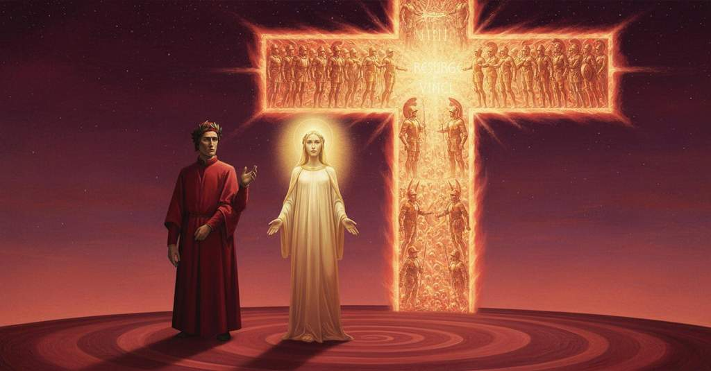

Paradiso — Canto 14

Dopo che Salomone spiega come la luce delle anime si accrescerà con i corpi risorti, Dante sale con Beatrice nel cielo di Marte, dove innumerevoli spiriti guerrieri formano una croce splendente su cui lampeggia Cristo. After Solomon explains how the souls' light will increase with their resurrected bodies, Dante ascends with Beatrice to the Heaven of Mars, where innumerable warrior spirits form a splendid cross upon which Christ flashes. ソロモンが復活した肉体と共に魂の光が増すことを説明した後、ダンテはベアトリーチェと共に火星の天へと昇り、そこで無数の戦士の霊がキリストの閃光が輝く壮麗な十字架を形作るのを見る。
1
Dal centro al cerchio, e sì dal cerchio al centro
From the center to the circle, and so from the circle to the center
中から縁へ、そして縁から中へと
2
movesi l’acqua in un ritondo vaso,
water moves in a round vase,
丸い器の中で水は動く、
3
secondo ch’è percosso fuori o dentro:
according as it is struck from without or within:
外からか内からか、打たれるに応じて。
4
ne la mia mente fé sùbito caso
into my mind there came at once the case
私の心にすぐに生じた
5
questo ch’io dico, sì come si tacque
of this which I say, as soon as was silent
この私が言うことが、丁度、沈黙した時に、
6
la glorïosa vita di Tommaso,
the glorious life of Thomas,
トマス・アクィナスの栄光ある生命が。
7
per la similitudine che nacque
because of the similarity that was born
生まれた類似性のために
8
del suo parlare e di quel di Beatrice,
of his speech and that of Beatrice,
彼の語りとベアトリーチェのそれとの間に。
9
a cui sì cominciar, dopo lui, piacque:
whom it pleased thus to begin, after him:
彼の後で、このように始めるのを彼女は好んだ。
10
«A costui fa mestieri, e nol vi dice
“This man has need, and he does not tell it you
「この者には必要です、そして彼はそれをあなたがたに言いません、
11
né con la voce né pensando ancora,
either with his voice or yet with his thought,
声に出しても、まだ考えてもいませんが、
12
d’un altro vero andare a la radice.
to go to the root of another truth.
もう一つの真理の根源へと至ることが。
13
Diteli se la luce onde s’infiora
Tell him if the light with which your substance
彼に告げなさい、光は、それによってあなたがたの実体は
14
vostra sustanza, rimarrà con voi
is enflowered, will remain with you
花飾られるのですが、あなたがたと共にとどまるのか
15
etternalmente sì com’ ell’ è ora;
eternally just as it is now;
それが今あるように永遠に。
16
e se rimane, dite come, poi
and if it remains, tell how, after
そしてもしとどまるなら、告げなさい、どのようにして、その後
17
che sarete visibili rifatti,
you are remade visible,
あなたがたが再び見えるように作られた後、
18
esser porà ch’al veder non vi nòi».
it can be that it does not harm your sight.”
それがあなたがたの視力を損なわないことがありえましょうか」。
19
Come, da più letizia pinti e tratti,
As, by greater joy spurred and drawn,
いかに、より大きな喜びに駆られ、引かれて、
20
a la fïata quei che vanno a rota
at times those who dance in a circle
一斉に輪になって踊る者たちは
21
levan la voce e rallegrano li atti,
raise their voices and gladden their movements,
声を上げ、その仕草を喜ばせるかのように、
22
così, a l’orazion pronta e divota,
so, at the ready and devout oration,
そのように、即座で敬虔な祈りに応えて、
23
li santi cerchi mostrar nova gioia
the holy circles showed new joy
聖なる輪は新たな喜びを示した
24
nel torneare e ne la mira nota.
in their turning and in their wondrous notes.
その旋回と見事な旋律のうちに。
25
Qual si lamenta perché qui si moia
Whoever laments that here one dies
ここで死ぬことを嘆く者は、
26
per viver colà sù, non vide quive
to live up there, has not seen here
かの天で生きるために、ここには見なかったのだ
27
lo refrigerio de l’etterna ploia.
the refreshment of the eternal rain.
永遠の雨の涼味を。
28
Quell’ uno e due e tre che sempre vive
That one and two and three that ever lives
かの、常に生きる一にして二、三なるものが、
29
e regna sempre in tre e ’n due e ’n uno,
and ever reigns in three and in two and in one,
そして常に、三にして二、一にして君臨し、
30
non circunscritto, e tutto circunscrive,
uncircumscribed, and circumscribing all,
囲われずして、すべてを囲むものが、
31
tre volte era cantato da ciascuno
was sung three times by each one
三度、歌われた、それぞれによって
32
di quelli spirti con tal melodia,
of those spirits with such a melody,
それらの霊たちから、このような旋律で、
33
ch’ad ogne merto saria giusto muno.
that for any merit it would be a just reward.
それはあらゆる功徳にふさわしい報いとなるだろう。
34
E io udi’ ne la luce più dia
And I heard in the most divine light
そして私は、より神々しい光の中から聞いた
35
del minor cerchio una voce modesta,
of the smaller circle a modest voice,
小さな輪から、慎ましやかな声を、
36
forse qual fu da l’angelo a Maria,
perhaps as was that of the angel to Mary,
おそらくは天使がマリアに告げたような、
37
risponder: «Quanto fia lunga la festa
answer: "As long as the festival
答えるのを。「楽園の祝宴が
38
di paradiso, tanto il nostro amore
of paradise shall be, so long our love
続く限り、我らの愛は
39
si raggerà dintorno cotal vesta.
will radiate around us such a garment.
このような衣の周りに光を放つでしょう。
40
La sua chiarezza séguita l’ardore;
Its brightness follows our ardor;
その輝きは熱情に従い、
41
l’ardor la visïone, e quella è tanta,
the ardor, our vision, and that is as great
熱情は直観に従う、そしてそれは、
42
quant’ ha di grazia sovra suo valore.
as the grace it has beyond its own merit.
自らの価値を超える恩寵を持つほどに大きい。
43
Come la carne glorïosa e santa
When the glorious and holy flesh
栄光に輝く聖なる肉体が
44
fia rivestita, la nostra persona
is clothed on us again, our person
再びまとわれる時、我らの人格は
45
più grata fia per esser tutta quanta;
will be more pleasing for being all complete;
全てが揃うことで、より喜ばしいものとなるでしょう。
46
per che s’accrescerà ciò che ne dona
for which will increase what is given us
そのゆえに、我らに与えられるものは増すでしょう
47
di gratüito lume il sommo bene,
of freely-given light by the highest good,
至高の善からの無償の光が、
48
lume ch’a lui veder ne condiziona;
a light that makes us fit to see him;
彼を見るための条件となる光が。
49
onde la visïon crescer convene,
whence the vision must needs increase,
それゆえ直観は増さねばならず、
50
crescer l’ardor che di quella s’accende,
the ardor that from it is kindled increase,
それによって燃え上がる熱情も増し、
51
crescer lo raggio che da esso vene.
the radiance that from that ardor comes increase.
そこから発せられる光も増すのです。
52
Ma sì come carbon che fiamma rende,
But just as a coal that gives forth flame,
しかし、炎を生み出す炭のように、
53
e per vivo candor quella soverchia,
and by its bright incandescence overpowers it,
そしてその熱い輝きで炎を凌駕し、
54
sì che la sua parvenza si difende;
so that its own appearance is preserved;
それでその姿が保たれるように、
55
così questo folgór che già ne cerchia
so this effulgence that now encircles us
そのように、今我らを囲むこの閃光は
56
fia vinto in apparenza da la carne
will be surpassed in appearance by the flesh
見た目において肉体に打ち負かされるでしょう
57
che tutto dì la terra ricoperchia;
that for now the earth covers over;
今なお大地が覆っているその肉体に。
58
né potrà tanta luce affaticarne:
nor will such great light be able to fatigue us:
それほどの光も我らを疲れさせることはないでしょう。
59
ché li organi del corpo saran forti
for the organs of the body will be strong
なぜなら体の器官は強くなるでしょうから
60
a tutto ciò che potrà dilettarne».
for all that which will be our delight."
我らを喜ばせるであろう全てのものに対して」。
61
Tanto mi parver sùbiti e accorti
So sudden and eager seemed to me
それほどに突然で熱心に私には思えた
62
e l’uno e l’altro coro a dicer «Amme!»,
both the one and the other chorus in saying "Amen!",
一つ目と二つ目の合唱隊が「アーメン！」と叫ぶのが、
63
che ben mostrar disio d’i corpi morti:
that they truly showed their desire for their dead bodies:
彼らが死んだ体への望みをよく示したので、
64
forse non pur per lor, ma per le mamme,
perhaps not only for themselves, but for their mothers,
おそらくは自分たちのためだけでなく、母たちのために、
65
per li padri e per li altri che fuor cari
for their fathers, and for the others who were dear
父たちのために、そして愛しかった他の人々のために
66
anzi che fosser sempiterne fiamme.
before they were sempiternal flames.
彼らが永遠の炎となる前に。
67
Ed ecco intorno, di chiarezza pari,
And behold, around them, of equal brightness,
そして見よ、周りに、等しい輝きをもって、
68
nascere un lustro sopra quel che v’era,
a luster was born above the one that was there,
そこにあったものの上に一つの光輝が生まれるのを、
69
per guisa d’orizzonte che rischiari.
in the manner of a horizon that brightens.
あたかも明るんでいく地平線のように。
70
E sì come al salir di prima sera
And just as at the rising of early evening
そして、宵の口に、
71
comincian per lo ciel nove parvenze,
new apparitions begin across the sky,
空に新たな姿が現れ始め、
72
sì che la vista pare e non par vera,
so that the sight seems and seems not real,
その光景が真実のようであり、また真実でないように見えるように、
73
parvemi lì novelle sussistenze
it seemed to me that I began to see new substances
私にはそこで新たな存在たちが
74
cominciare a vedere, e fare un giro
there, and that they made a circle
見え始め、一つの輪をなし、
75
di fuor da l’altre due circunferenze.
outside the other two circumferences.
他の二つの円周の外を巡るように思われた。
76
Oh vero sfavillar del Santo Spiro!
Oh true sparkling of the Holy Spirit!
おお、聖霊の真実の輝きよ！
77
come si fece sùbito e candente
how sudden and incandescent it became
いかにそれは突如として白熱のものとなり、
78
a li occhi miei che, vinti, nol soffriro!
to my eyes which, conquered, did not endure it!
打ち負かされた我が目は、それに耐えられなかったことか！
79
Ma Bëatrice sì bella e ridente
But Beatrice so beautiful and smiling
しかしベアトリーチェはかくも美しく微笑みながら
80
mi si mostrò, che tra quelle vedute
showed herself to me, that it must be left
私に姿を現したので、その光景は、
81
si vuol lasciar che non seguir la mente.
among those sights the mind cannot follow.
心が追うことのできぬものとして、そこに残さねばならない。
82
Quindi ripreser li occhi miei virtute
Then my eyes regained the power
それゆえ我が目は力を取り戻し、
83
a rilevarsi; e vidimi translato
to raise themselves again; and I saw myself translated
再び身を起こした。そして私は自分が移されたのを見た、
84
sol con mia donna in più alta salute.
alone with my lady to a higher salvation.
ただ我が貴婦人と共に、より高き救いの境地へと。
85
Ben m’accors’ io ch’io era più levato,
Well did I perceive that I was more uplifted,
私は自分がより高く上げられたことをはっきりと悟った、
86
per l’affocato riso de la stella,
by the fiery smile of the star,
その星の燃えるような微笑みによって、
87
che mi parea più roggio che l’usato.
which seemed to me more ruddy than its wont.
それは常よりも赤く私には見えた。
88
Con tutto ’l core e con quella favella
With all my heart and with that speech
心のすべてをもって、そしてあの言葉で、
89
ch’è una in tutti, a Dio feci olocausto,
that is one in all, I made a holocaust to God,
それはすべてにおいて一つであるが、神に私は燔祭を捧げた、
90
qual conveniesi a la grazia novella.
as was befitting the new grace.
新たな恩寵にふさわしいものを。
91
E non er’ anco del mio petto essausto
And the ardor of the sacrifice was not yet
そして我が胸からまだ尽きてはいなかった、
92
l’ardor del sacrificio, ch’io conobbi
exhausted from my breast, when I knew
その犠牲の熱情が。その時私は知った、
93
esso litare stato accetto e fausto;
that offering had been accepted and auspicious;
その捧げものが受け入れられ、吉兆であったことを。
94
ché con tanto lucore e tanto robbi
for with such light and such redness
なぜなら、かくも大いなる光輝と、かくも大いなる赤みをもって
95
m’apparvero splendor dentro a due raggi,
splendors appeared to me within two rays,
二つの光線の中に輝きが私に現れ、
96
ch’io dissi: «O Elïòs che sì li addobbi!».
that I said: “O Helios, who so adorns them!”
私は言った。「おお、エリオスよ、汝はかくもそれらを飾るのか！」と。
97
Come distinta da minori e maggi
As, picked out by lesser and by greater
大小さまざまな光によって区別され、
98
lumi biancheggia tra ’ poli del mondo
lights, the Galaxy so whitens between the poles of the world
世界の両極の間で白く輝く
99
Galassia sì, che fa dubbiar ben saggi;
that it makes even wise men doubt;
天の川が、賢人たちをも疑わせるように、
100
sì costellati facean nel profondo
so constellated, in the depth of Mars,
そのように星々で飾られ、火星の深奥で
101
Marte quei raggi il venerabil segno
those rays made the venerable sign
その光線は、敬うべき印を形作っていた、
102
che fan giunture di quadranti in tondo.
that joints of quadrants make in a circle.
それは円の中の四分円の交差のようであった。
103
Qui vince la memoria mia lo ’ngegno;
Here my memory vanquishes my genius;
ここで私の記憶は私の才を凌駕する。
104
ché quella croce lampeggiava Cristo,
for that cross was flashing Christ,
なぜなら、その十字架はキリストを閃光のように輝かせていたからだ、
105
sì ch’io non so trovare essempro degno;
so that I cannot find a worthy example;
そのため私はふさわしい比喩を見出すことができない。
106
ma chi prende sua croce e segue Cristo,
but he who takes his cross and follows Christ
しかし、自らの十字架を背負いキリストに従う者は、
107
ancor mi scuserà di quel ch’io lasso,
will yet excuse me for what I leave out,
なおも私が書き残したことについて私を許してくれるだろう、
108
vedendo in quell’ albor balenar Cristo.
seeing in that whiteness Christ gleam.
その曙光の中にキリストが閃くのを見て。
109
Di corno in corno e tra la cima e ’l basso
From horn to horn, and between the top and the base,
腕から腕へ、そして頂から底辺へと、
110
si movien lumi, scintillando forte
lights were moving, sparkling brightly
光が動き、強くきらめいていた、
111
nel congiugnersi insieme e nel trapasso:
in their meeting together and in their passing:
互いに合わさり、また通り過ぎる際に。
112
così si veggion qui diritte e torte,
so are seen here, straight and crooked,
このように地上では、まっすぐなものも曲がったものも、
113
veloci e tarde, rinovando vista,
swift and slow, changing their aspect,
速いものも遅いものも、姿を変えながら見られる、
114
le minuzie d’i corpi, lunghe e corte,
the tiny particles of bodies, long and short,
長短さまざまな、物体の微粒子が、
115
moversi per lo raggio onde si lista
moving through the ray with which is sometimes striped
筋をなす光線の中を動くように、
116
talvolta l’ombra che, per sua difesa,
the shadow that, for its defense,
それは時として、身を守るために、
117
la gente con ingegno e arte acquista.
people with genius and art acquire.
人々が知恵と術とをもって手に入れる影である。
118
E come giga e arpa, in tempra tesa
And as a viol and a harp, in a taut tuning
そして、多くの弦が調和して張られた、ジグやハープが
119
di molte corde, fa dolce tintinno
of many strings, make a sweet tinkling
甘い音色を奏でるように、
120
a tal da cui la nota non è intesa,
to one by whom the note is not understood,
その旋律が理解できない者にも、
121
così da’ lumi che lì m’apparinno
so from the lights that appeared to me there,
そのように、そこに私に現れた光から、
122
s’accogliea per la croce una melode
a melody was gathered through the cross
十字架を通じて一つの旋律が集められ、
123
che mi rapiva, sanza intender l’inno.
that ravished me, without my understanding the hymn.
その賛歌を理解することなく、私を魅了した。
124
Ben m’accors’ io ch’elli era d’alte lode,
I was well aware that it was of high praises,
私はそれが高らかな賛美であることにはよく気づいていた。
125
però ch’a me venìa «Resurgi» e «Vinci»
because to me came “Rise again” and “Conquer,”
なぜなら私には「蘇りたまえ」「勝ちたまえ」と聞こえてきたからだ、
126
come a colui che non intende e ode.
like to one who does not understand, yet hears.
理解せずとも聞く者のように。
127
Ïo m’innamorava tanto quinci,
I was so much in love with it all,
私はそこのものに深く心を奪われたので、
128
che ’nfino a lì non fu alcuna cosa
that until then there had been nothing
それまでいかなるものもなかった、
129
che mi legasse con sì dolci vinci.
that had bound me with such sweet bonds.
これほど甘い絆で私を縛るものは。
130
Forse la mia parola par troppo osa,
Perhaps my words seem too daring,
おそらく私の言葉はあまりに大胆に思われるだろう、
131
posponendo il piacer de li occhi belli,
placing second the pleasure of the beautiful eyes,
あの美しい瞳の喜びを後回しにして、
132
ne’ quai mirando mio disio ha posa;
in gazing on which my desire finds its rest;
それを見つめることで私の望みは安らぎを得るのだが。
133
ma chi s’avvede che i vivi suggelli
but he who perceives that the living seals
しかし、生ける印であるところの
134
d’ogne bellezza più fanno più suso,
of every beauty have more effect higher up,
あらゆる美は、上へ行くほどにその力を増し、
135
e ch’io non m’era lì rivolto a quelli,
and that I had not there turned myself to them,
そして私がそこでその瞳に顔を向けていなかったことを
136
escusar puommi di quel ch’io m’accuso
can excuse me for that of which I accuse myself
知る者は、私が自らを責めることについて私を許すことができ、
137
per escusarmi, e vedermi dir vero:
to excuse myself, and see that I speak the truth:
私を許すために、そして私が真実を語るのを見るだろう。
138
ché ’l piacer santo non è qui dischiuso,
for the holy pleasure is not here excluded,
なぜなら、聖なる喜びはここで閉ざされたのではなく、
139
perché si fa, montando, più sincero.
because it becomes, in ascending, more pure.
登るにつれて、より純粋になるからである。